Electrochemistry 2
Topic 12 · Electrochemistry Part 2
On this page
- Introduction
- Key terms
- How an electrode potential arises
- The standard hydrogen electrode
- Measuring standard electrode potentials
- The redox series
- Standard cell potentials
- Predicting whether a reaction will happen
- Limitations of using standard cell potentials
- Cell potentials and ΔG⦵
- How concentration affects electrode potentials
- Batteries and fuel cells
- Summary
Introduction
In Topic 5 Part 3 you read standard electrode potentials, E⦵, from the Data Booklet to explain why chlorine is a stronger oxidising agent than iodine. This Part explains where those numbers come from: how an electrode potential arises, and how it is measured against the standard hydrogen electrode. Then it uses them: to build cells and find which way the electrons flow, to predict whether a reaction can happen (and where that prediction fails), to calculate ΔG⦵, and to see how concentration changes the picture. It ends with batteries and fuel cells. Part 1 covers the half-equations used here; Part 3 covers electrolysis.
Key terms
You will use these terms throughout this Part.
| Term | Meaning |
|---|---|
| Half-cell | An element in contact with a solution of its ions, e.g. Zn(s) in Zn2+(aq); or two species of one element in solution, with an inert electrode, e.g. Pt in Fe3+(aq) and Fe2+(aq). |
| Electrode potential, E | The potential difference set up between an electrode and the solution around it. Only differences between two electrodes can be measured. |
| Standard electrode potential, E⦵ | The potential difference between a half-cell and a standard hydrogen electrode, both under standard conditions. |
| Standard conditions | 298 K; 1 mol dm−3 for every ion in the half-equation; 1 bar (105 Pa) for every gas. |
| Standard hydrogen electrode (SHE) | The reference half-cell: H2(g) at 1 bar bubbled over platinum coated with platinum black, in 1 mol dm−3 H+(aq), at 298 K. E⦵ = 0.00 V by definition. |
| Standard cell potential, E⦵cell | The potential difference between the two half-cells of a cell under standard conditions. |
| Salt bridge | Filter paper (or a tube of gel) soaked in a saturated solution of an unreactive salt such as KNO3. It completes the circuit by letting ions move between the half-cells, without mixing the solutions. |
| Anode and cathode (in a cell) | The anode is where oxidation takes place: the negative electrode of a cell. The cathode is where reduction takes place: the positive electrode. |
| Redox series (electrochemical series) | Half-equations, written as reductions, arranged in order of their E⦵ values. |
How an electrode potential arises
Dip a zinc rod into a solution of zinc ions. A few zinc atoms leave the rod as Zn2+ ions, leaving their electrons behind, and a few Zn2+ ions pick up electrons and deposit as zinc. An equilibrium is set up quickly:
Zn2+(aq) + 2e− ⇌ Zn(s)
The rod becomes negatively charged, with a layer of positive ions in the solution next to it: there is a potential difference between the metal and the solution. Copper in copper(II) ions does the same, but copper atoms are much less ready to form ions, so the position of its equilibrium lies further to the right and fewer electrons are left on the rod (Fig 3).
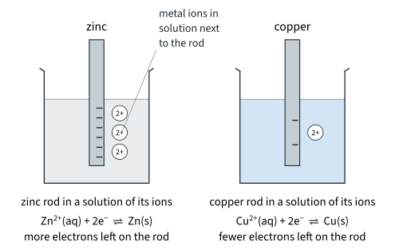
The potential difference between a rod and its own solution cannot be measured on its own: to connect a voltmeter, a second wire has to dip into the solution, and that wire sets up a potential of its own. Only the difference between two half-cells can be measured. So every half-cell is measured against the same reference, and the reference is given the value zero.
The standard hydrogen electrode
The reference chosen is the standard hydrogen electrode (SHE), Fig 4. Hydrogen gas is bubbled over a platinum electrode dipping into a solution of hydrogen ions, and this equilibrium is set up on the surface of the platinum:
2H+(aq) + 2e− ⇌ H2(g) E⦵ = 0.00 V (by definition)
Every detail matters:
- Hydrogen gas at 1 bar (105 Pa): the potential depends on the pressure of the gas, just as it depends on a concentration.
- 1 mol dm−3 H+(aq), for example 1 mol dm−3 hydrochloric acid.
- 298 K.
- Platinum coated with platinum black. Platinum is inert: it does not react itself, it only carries electrons in and out. Platinum black is finely divided platinum. Its large surface area adsorbs hydrogen and catalyses H2 ⇌ 2H+ + 2e−, so the equilibrium is reached quickly.
- The glass hood keeps hydrogen around the top of the platinum, so the platinum is in contact with both the gas and the solution.
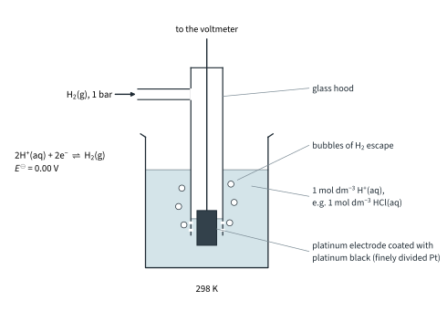
In practice the SHE is awkward to use (a cylinder of hydrogen, and platinum black is easily poisoned), so laboratories use a more convenient secondary reference electrode whose potential against the SHE is known.1
Measuring standard electrode potentials
Metals in contact with their ions
To measure E⦵ for Zn2+/Zn, connect a zinc half-cell to a standard hydrogen electrode (Fig 5):
- a zinc rod in 1 mol dm−3 Zn2+(aq), e.g. ZnSO4(aq), at 298 K;
- a salt bridge of filter paper soaked in saturated KNO3(aq), to complete the circuit without mixing the solutions;
- a high-resistance voltmeter, so that almost no current flows. If a current flowed, the concentrations would change and the reading would be lower than the true potential difference.
The voltmeter reads 0.76 V, and the zinc is the negative electrode: zinc gives up electrons more readily than hydrogen does. So E⦵(Zn2+/Zn) = −0.76 V. Do the same with copper and the reading is 0.34 V, but now the copper is the positive electrode: E⦵(Cu2+/Cu) = +0.34 V. The sign of E⦵ is the sign of the half-cell's electrode when it is connected to the SHE.
Non-metals in contact with their ions
A non-metal such as chlorine cannot be made into a rod. Chlorine gas at 1 bar is bubbled over a platinum electrode dipping into 1 mol dm−3 Cl−(aq) (Fig 6(a)); the platinum is again just a conductor. The reading is 1.36 V with the platinum positive: E⦵(Cl2/Cl−) = +1.36 V. Topic 5 wrote Cl2(aq) for the displacement reactions in water; the Data Booklet value is for Cl2 gas at 1 bar.
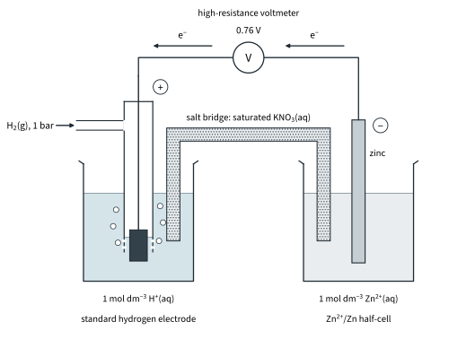
Ions of the same element in different oxidation states
For a pair such as Fe3+/Fe2+, neither species is a solid. Dip a platinum electrode into a solution containing both ions, each at 1 mol dm−3 (Fig 6(b)). The equilibrium Fe3+(aq) + e− ⇌ Fe2+(aq) is set up on the platinum surface, and the reading against the SHE gives E⦵(Fe3+/Fe2+) = +0.77 V.
If H+ appears in the half-equation, it must be at 1 mol dm−3 too. For MnO4−/Mn2+ the platinum dips into a solution that is 1 mol dm−3 in MnO4−, Mn2+ and H+:
MnO4−(aq) + 8H+(aq) + 5e− ⇌ Mn2+(aq) + 4H2O(l) E⦵ = +1.52 V
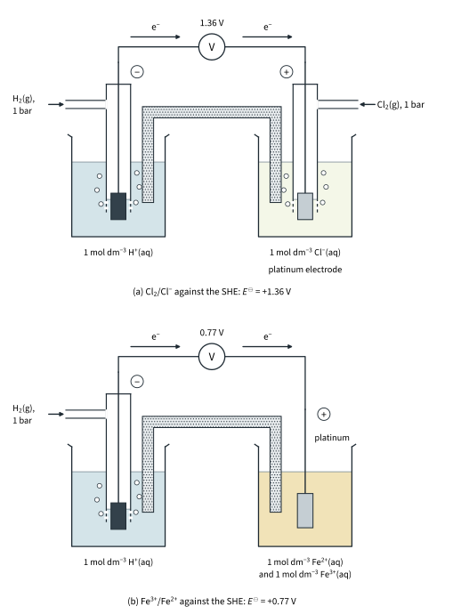
The redox series
Arrange the half-equations in order of E⦵ and you have the redox series (electrochemical series). The Data Booklet lists them alphabetically by element; Fig 7 puts a selection in order. Every half-equation is written as a reduction, with the electrons on the left, and with ⇌.
Read the ladder like this:
- The more positive E⦵, the more readily the species on the left gains electrons: the stronger it is as an oxidising agent. F2 (+2.87 V) is the strongest oxidising agent in the table; MnO4− in acid (+1.52 V) is strong; Zn2+ (−0.76 V) is very weak.
- The more negative E⦵, the more readily the species on the right loses electrons: the stronger it is as a reducing agent. Lithium (−3.04 V) is the strongest reducing agent in the table, and the Group 1 and Group 2 metals are all strong.
- The reduced form of a strong oxidising agent is a very weak reducing agent: F− has almost no tendency to give up an electron. In the same way, Li+ has almost no tendency to take one.
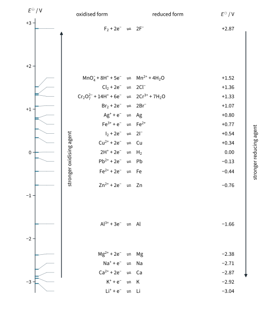
For the metals this is the reactivity series, put on a numerical scale, and it extends to non-metals and ions too. Topic 5 Part 3 used it for the halogens (Cl2 +1.36, Br2 +1.07, I2 +0.54 V) and the Group 2 metals.
Standard cell potentials
Join two half-cells with a salt bridge and a wire, and you have a cell. The classic example is the Daniell cell: zinc in zinc sulfate solution and copper in copper(II) sulfate solution (Fig 8).
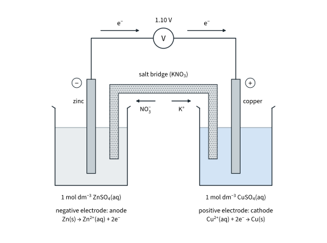
The half-cell with the more negative E⦵ releases electrons: zinc is oxidised, and the zinc electrode is negative. The half-cell with the more positive E⦵ takes electrons: Cu2+ is reduced, and the copper electrode is positive. The cell potential is the difference:
E⦵cell = (+0.34) − (−0.76) = +1.10 V
The cell reaction is the sum of the two half-equations:
anode (−): Zn(s) → Zn2+(aq) + 2e− oxidation
cathode (+): Cu2+(aq) + 2e− → Cu(s) reduction
overall: Zn(s) + Cu2+(aq) → Zn2+(aq) + Cu(s) E⦵cell = +1.10 V
This is the reaction of Fig 1 in Part 1, but with the zinc and the Cu2+ ions kept apart, so the electrons have to travel through the wire, where they can do useful work.2
Which way do the electrons flow?
In a cell and in electrolysis (Part 3) alike, oxidation happens at the anode and reduction at the cathode. What changes is the sign: in a cell the anode is negative.
Worked example 1: copper and silver
A cell is made from a Cu2+/Cu half-cell and a Ag+/Ag half-cell under standard conditions. (a) Calculate E⦵cell. (b) State which electrode is negative, and the direction of electron flow in the wire. (c) Write the cell reaction. (d) Explain why the salt bridge contains KNO3, not KCl.
(a) (To answer part (a), you have to find which couple has the more positive E⦵: Ag+/Ag, +0.80 V, against Cu2+/Cu, +0.34 V. Silver ions are reduced.)
E⦵cell = E⦵(Ag+/Ag) − E⦵(Cu2+/Cu) = (+0.80) − (+0.34) = +0.46 V
(b) Copper, with the more negative E⦵, is the negative electrode; electrons flow through the wire from the copper to the silver.
(c) Two silver ions are needed for each copper atom, but the E⦵ values are not multiplied by 2:
Cu(s) + 2Ag+(aq) → Cu2+(aq) + 2Ag(s) E⦵cell = +0.46 V
(d) Chloride ions from the bridge would precipitate silver chloride in the silver half-cell, removing Ag+ ions.
Predicting whether a reaction will happen
A cell runs because its reaction happens by itself. Turn that round: if a reaction would give a positive E⦵cell, it can happen under standard conditions. You do not need to build the cell; just imagine it.
Worked example 2: will chlorine oxidise iron(II) ions?
(To answer this, you have to write the reaction that would have to happen: Cl2 + 2Fe2+ → 2Cl− + 2Fe3+. Chlorine would be reduced and Fe2+ oxidised.)
E⦵cell = E⦵(Cl2/Cl−) − E⦵(Fe3+/Fe2+) = (+1.36) − (+0.77) = +0.59 V
Positive: chlorine does oxidise iron(II) to iron(III). Fig 9 shows the same rule as a picture. On a ladder with the most positive E⦵ at the top, the species at the upper left (the stronger oxidising agent) reacts with the species at the lower right (the stronger reducing agent).3
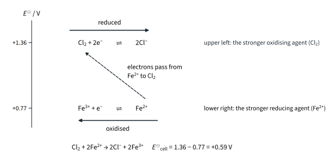
Worked example 3: iron(III) with iodide and with bromide
Will Fe3+ ions oxidise (a) iodide ions, (b) bromide ions?
(a) 2Fe3+ + 2I− → 2Fe2+ + I2, with Fe3+ reduced: E⦵cell = (+0.77) − (+0.54) = +0.23 V. Yes: iodine is formed, and the solution turns brown.
(b) 2Fe3+ + 2Br− → 2Fe2+ + Br2: E⦵cell = (+0.77) − (+1.07) = −0.30 V. No: Fe3+ is not a strong enough oxidising agent to oxidise bromide.
Worked example 4: metals with dilute acid
Which of zinc, copper and iron react with 1 mol dm−3 acid, and what does iron give? (In each case H+ would be reduced: E⦵(reduction) = 0.00 V.)
| Reaction tested | E⦵cell / V | Prediction |
|---|---|---|
| Zn + 2H+ → Zn2+ + H2 | 0.00 − (−0.76) = +0.76 | reacts: H2 given off |
| Cu + 2H+ → Cu2+ + H2 | 0.00 − (+0.34) = −0.34 | no reaction |
| Fe + 2H+ → Fe2+ + H2 | 0.00 − (−0.44) = +0.44 | reacts, giving Fe2+ |
| 2Fe2+ + 2H+ → 2Fe3+ + H2 | 0.00 − (+0.77) = −0.77 | H+ cannot oxidise Fe2+ further |
So iron dissolves in dilute acid to give iron(II), not iron(III). Metals with a negative E⦵ can release hydrogen from 1 mol dm−3 acid; whether they do so at a useful rate is another matter (the limitations below).
Worked example 5: why acidify KMnO4 with sulfuric acid?
In Topic 6, potassium manganate(VII) titrations are acidified with dilute sulfuric acid, never hydrochloric acid. Explain why. (To answer this, you have to test whether MnO4− would oxidise the chloride ions of HCl.)
2MnO4− + 10Cl− + 16H+ → 2Mn2+ + 5Cl2 + 8H2O
E⦵cell = (+1.52) − (+1.36) = +0.16 V
Positive: some of the manganate(VII) would be used up oxidising Cl− to chlorine, so the titre would be too large and the answer wrong. In sulfuric acid, SO42− cannot be oxidised: sulfur is already +6 (water could be, but only extremely slowly). For dichromate(VI), E⦵cell = (+1.33) − (+1.36) = −0.03 V, so dichromate titrations can be done in dilute hydrochloric acid. The margin is only 0.03 V, though (limitation 3 below), and concentrated HCl would be oxidised (limitation 2).
Further examples
Copper and concentrated nitric acid (Further example). Copper does not react with H+ (−0.34 V above), yet it dissolves in concentrated nitric acid, because there the oxidising agent is the nitrate ion, not H+:
Cu(s) + 2NO3−(aq) + 4H+(aq) → Cu2+(aq) + 2NO2(g) + 2H2O(l)
E⦵cell = (+0.81) − (+0.34) = +0.47 V
Brown NO2 gas is given off.
Copper(I) disproportionates (Further example). In 2Cu+ → Cu + Cu2+ (Part 1), Cu+ is both reduced to Cu (Cu+/Cu, +0.52 V) and oxidised to Cu2+ (the couple Cu2+/Cu+, +0.15 V):
E⦵cell = (+0.52) − (+0.15) = +0.37 V
Positive, so Cu+(aq) is unstable in water.
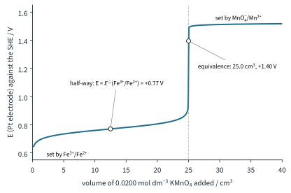
Limitations of using standard cell potentials
A positive E⦵cell says that a reaction can happen. It does not promise that it will, and a negative value is not always the last word. There are five limitations.
- E⦵cell says nothing about the rate. It is about energetics, not kinetics. S2O82− + 2I− → 2SO42− + I2 has E⦵cell = (+2.01) − (+0.54) = +1.47 V, but it is slow, because two negative ions have to collide; Fe2+ ions catalyse it (Topic 8). MnO4− with C2O42− is slow at room temperature, which is why that titration is warmed to about 60 °C (literature value); once some Mn2+ has formed, it catalyses the reaction.
- Standard conditions only. Real concentrations are rarely 1 mol dm−3. MnO2 does not oxidise 1 mol dm−3 HCl (E⦵cell = (+1.23) − (+1.36) = −0.13 V), yet warming MnO2 with concentrated hydrochloric acid is a standard way to make chlorine: the high [H+] and [Cl−] change both electrode potentials (see the next section).
- A small E⦵cell means an equilibrium. For Ag+ + Fe2+ ⇌ Ag + Fe3+, E⦵cell = (+0.80) − (+0.77) = +0.03 V. The reaction does not go to completion: an equilibrium mixture forms (Topic 9 Tutorial 1 Q2(d) writes Kc for it), and changing the concentrations can make it go the other way. Only a large E⦵cell means the reaction goes essentially to completion.
- Aqueous solutions at 298 K. E⦵ values are for ions in water at 298 K. They do not apply directly to reactions of solids, of molten salts, or at high temperatures.
- The actual products may differ. The prediction is only for the reaction you tested. Another reaction with a larger E⦵cell may happen instead, or a product may react further. MnO4−, for example, gives Mn2+ in acid but MnO2 in neutral or alkaline solution.
Cell potentials and ΔG⦵
A positive E⦵cell and a negative ΔG⦵ (Topic 7 Part 3) both say "spontaneous". They are linked by
| E⦵cell | ΔG⦵ | Reaction under standard conditions |
|---|---|---|
| positive | negative | spontaneous (energetically feasible) |
| negative | positive | not spontaneous; the reverse reaction is spontaneous |
| zero | zero | at equilibrium |
Worked example 6: the Daniell cell
Calculate ΔG⦵ for Zn(s) + Cu2+(aq) → Zn2+(aq) + Cu(s). (To answer this, you need n: two electrons are transferred for each Zn, so n = 2.)
ΔG⦵ = −nFE⦵cell = −2 × (9.65 × 104) × (+1.10) = −2.123 × 105 J mol−1 = −212 kJ mol−1
Topic 7 Part 1 measured ΔH for the same reaction as about −217 kJ mol−1 (illustrative data); the literature value is about −219 kJ mol−1 (−218.7). ΔG⦵ and ΔH⦵ are close here because ΔS⦵ is small: TΔS⦵ = ΔH⦵ − ΔG⦵ ≈ (−218.7) − (−212.3) = −6.4, so TΔS⦵ is about −6 kJ mol−1. In a reaction with a large entropy change they would differ much more.
Worked example 7: manganate(VII) and iron(II)
Calculate ΔG⦵ for MnO4− + 5Fe2+ + 8H+ → Mn2+ + 5Fe3+ + 4H2O. (To answer this, you need n for the equation as written: one MnO4− takes 5 electrons, so n = 5.)
E⦵cell = (+1.52) − (+0.77) = +0.75 V
ΔG⦵ = −5 × (9.65 × 104) × (+0.75) = −3.62 × 105 J mol−1 = −362 kJ mol−1
In the same way, Cr2O72− with Fe2+ (n = 6, E⦵cell = (+1.33) − (+0.77) = +0.56 V) gives ΔG⦵ = −324 kJ mol−1. Double an equation and ΔG⦵ doubles (n doubles), but E⦵cell stays the same.
Combining half-equations
Sometimes you need an E⦵ for a half-equation that is not in the table, but two half-equations that add up to it are. For example, Fe3+ + 3e− → Fe is the sum of
Fe3+ + e− → Fe2+ E⦵ = +0.77 V, n = 1
Fe2+ + 2e− → Fe E⦵ = −0.44 V, n = 2
It is tempting to add the E⦵ values (+0.33 V) or to average them. Both are wrong, because E⦵ does not depend on the amount, whereas ΔG⦵ does. Add the ΔG⦵ values instead:
ΔG⦵ = −(1)F(+0.77) + [−(2)F(−0.44)] = −0.77F + 0.88F = +0.11F
E⦵(Fe3+/Fe) = −ΔG⦵ / (3F) = −(0.11F) / (3F) = −0.037 V ≈ −0.04 V
which is the value in the Data Booklet. F cancels, so you never need its value here. In the same way, Cr3+ + 3e− → Cr is the sum of Cr3+/Cr2+ (−0.41 V, n = 1) and Cr2+/Cr (−0.91 V, n = 2):
E⦵(Cr3+/Cr) = [1 × (−0.41) + 2 × (−0.91)] / 3 = (−2.23) / 3 = −0.743 V ≈ −0.74 V
How concentration affects electrode potentials
E⦵ values are for 1 mol dm−3. At other concentrations the electrode potential, E, is different, and you can predict which way it moves with Le Chatelier's Principle (Topic 9 Part 2), applied to the half-equation written as a reduction:
Cu2+(aq) + 2e− ⇌ Cu(s)
- Increase [Cu2+]: the position of equilibrium shifts to the right, the electrode takes electrons more readily, and E becomes more positive.
- Decrease [Cu2+]: the position shifts to the left, and E becomes less positive (more negative).
The effect on a cell
For the Daniell cell, Ecell = E(Cu2+/Cu) − E(Zn2+/Zn):
- Lower [Cu2+]: E(Cu2+/Cu) becomes less positive, so Ecell falls.
- Lower [Zn2+]: E(Zn2+/Zn) becomes more negative, so Ecell rises.
As any cell runs, the oxidising agent at the cathode is used up and the product at the anode builds up, so Ecell falls. When it reaches zero the reaction is at equilibrium: the cell is flat. Fig 11 shows by how much E changes, from the Nernst equation in the Enrichment box below.
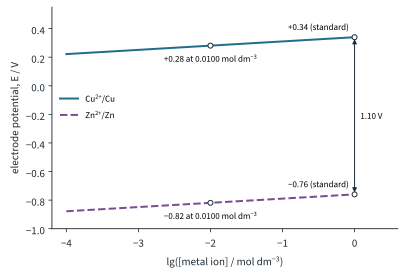
Hydrogen ions
When H+ appears in the half-equation, E depends on the pH too. MnO4− + 8H+ + 5e− ⇌ Mn2+ + 4H2O has eight H+ on the left, so E is very sensitive to [H+]: manganate(VII) is a much stronger oxidising agent in acid than in neutral solution. That is why it is used in acid.
The same idea explains MnO2 and concentrated hydrochloric acid (limitation 2). In MnO2 + 4H+ + 2e− ⇌ Mn2+ + 2H2O, a high [H+] makes E more positive; in Cl2 + 2e− ⇌ 2Cl−, a high [Cl−] makes E less positive. Concentrated HCl does both at once, enough to make the reaction feasible. Heating, and the chlorine escaping as a gas, push it further.
Complex formation (Further example)
A ligand that binds a metal ion lowers the concentration of the free ion, so the electrode potential becomes more negative. Ammonia binds Cu2+ strongly as [Cu(NH3)4]2+, and the Data Booklet shows the effect: E⦵([Cu(NH3)4]2+/Cu) = −0.05 V, against +0.34 V for Cu2+/Cu. Cyanide ions bind Fe3+ more strongly than Fe2+: E⦵([Fe(CN)6]3−/[Fe(CN)6]4−) = +0.36 V, against +0.77 V for Fe3+/Fe2+. Complexes are covered in Topic 13.
Batteries and fuel cells
A battery is one or more cells joined together, in which a spontaneous redox reaction produces electricity. Whatever the chemistry, the questions are the same: how high a voltage per cell, how much energy per kilogram and per dm3, can it be recharged, and how safe and cheap is it?
The hydrogen-oxygen fuel cell
A fuel cell is a cell whose reactants are supplied continuously from outside, so it never runs flat as long as fuel and air are fed in. In the hydrogen-oxygen fuel cell with an acidic electrolyte (in practice a polymer membrane that conducts H+ ions, the proton-exchange membrane of Fig 12), the reactions are:
anode (−): 2H2(g) → 4H+(aq) + 4e− E⦵ = 0.00 V
cathode (+): O2(g) + 4H+(aq) + 4e− → 2H2O(l) E⦵ = +1.23 V
overall: 2H2(g) + O2(g) → 2H2O(l) E⦵cell = (+1.23) − 0.00 = +1.23 V
ΔG⦵ = −4 × (9.65 × 104) × (+1.23) = −4.75 × 105 J for 2 mol of water, that is −237 kJ per mole of H2O(l): the standard Gibbs energy change of formation of water, which agrees with the literature value for forming water (Topic 7 Tutorial 3 Q8 uses it). A fuel cell turns that Gibbs energy straight into electrical work.
Advantages over burning petrol or diesel in an engine:
- The only product is water: no CO2, CO, oxides of nitrogen or particulates where it is used.
- It converts chemical energy into electrical energy more efficiently than burning petrol or diesel in an engine to drive a generator.
- It runs as long as fuel is supplied, and refuelling takes minutes, not the hours a battery takes to recharge.
- The cell itself has no moving parts and is quiet.
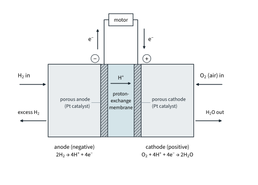
Drawbacks:
- Hydrogen is hard to store and transport: a gas of very low density, it has to be kept at high pressure or as a liquid at a very low temperature, and it is flammable.
- Most hydrogen today is made by steam reforming of methane (Topic 9 Part 2), which releases CO2; it is only "clean" if it is made by electrolysis of water with renewable electricity.
- The electrodes need a platinum catalyst, which is expensive. And a real cell gives only about 0.6–0.8 V while it is delivering current (literature value), well below 1.23 V.
Improved batteries for electric vehicles
For a car or a phone, the battery must store as much energy as possible in as small and light a package as possible. The energy delivered is charge × voltage, so two things matter: a high voltage per cell, and a small mass of material per mole of electrons.
Lithium wins on both counts. Li+/Li has the most negative E⦵ in the Data Booklet, −3.04 V, so a cell with a lithium-metal negative electrode has a very high voltage. Lithium-ion cells hold the lithium in graphite instead of as the metal (Enrichment box below), but still give about 3.6–3.7 V, against 2.0 V for lead-acid. And lithium is the lightest metal. The mass of metal that supplies one mole of electrons is Ar divided by the charge on its ion:
| Metal | Half-equation | Mass for 1 mol of electrons / g |
|---|---|---|
| lithium | Li → Li+ + e− | 6.9 / 1 = 6.9 |
| zinc | Zn → Zn2+ + 2e− | 65.4 / 2 = 32.7 |
| lead | Pb → Pb2+ + 2e− | 207.2 / 2 = 103.6 |
So for the same energy a lithium cell is smaller and lighter. The table compares mass: lithium needs far less metal for each mole of electrons. The battery is also smaller because each lithium cell gives about 3.6 V against 2.0 V for a lead-acid cell, so fewer cells are needed. The three advantages 9476 asks you to state are higher voltage, lower mass and smaller size.
The table and Fig 13 compare common cells (literature values, approximate).
| Cell | Voltage per cell / V | Specific energy / W h kg−1 | Rechargeable? | Typical use |
|---|---|---|---|---|
| lead-acid | 2.0 | about 30–40 | yes | car starter batteries; heavy |
| nickel-metal hydride (NiMH) | 1.2 | about 60–120 | yes | AA rechargeables, hybrid cars |
| alkaline (zinc-manganese dioxide) | 1.5 | about 100–150 | no | torches, remote controls |
| lithium-ion | about 3.6–3.7 | about 150–250 | yes | phones, laptops, electric vehicles |
| hydrogen-oxygen fuel cell | 1.23 in theory; about 0.6–0.8 in use | depends on the fuel tank | refuelled, not recharged | buses, trucks, backup power |
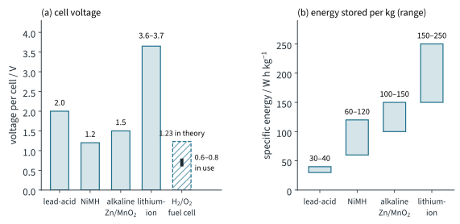
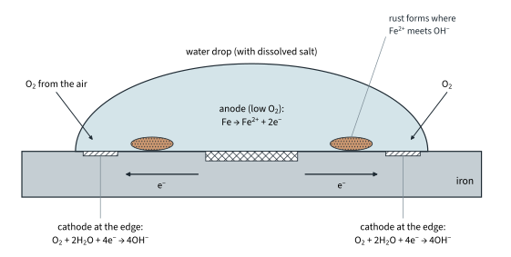
Summary
The ideas of this Part in one table.
| Idea | Key points |
|---|---|
| E⦵ | Potential difference between a half-cell and the SHE, both under standard conditions (298 K, 1 mol dm−3, 1 bar). Sign = sign of the half-cell's electrode against the SHE. |
| SHE | H2 at 1 bar over platinum black in 1 mol dm−3 H+, 298 K; 0.00 V. Measure with a salt bridge (KNO3) and a high-resistance voltmeter; Pt for non-metals and ion pairs. |
| Redox series | More positive E⦵: stronger oxidising agent (left). More negative E⦵: stronger reducing agent (right). |
| Cells | E⦵cell = E⦵(reduction) − E⦵(oxidation); never multiply E⦵. Electrons flow from the negative electrode (anode) to the positive (cathode). |
| Spontaneity | Positive E⦵cell: spontaneous under standard conditions. Limitations: no rate information; standard conditions only; small E⦵cell means equilibrium; aqueous, 298 K; other products possible. |
| ΔG⦵ | ΔG⦵ = −nFE⦵cell. Combine half-equations by adding nE⦵, never E⦵. |
| Concentration | More oxidised form (or H+) on the left of the reduction: E more positive. A running cell's Ecell falls to zero. |
| Batteries, fuel cells | H2/O2: 1.23 V, only water, continuous; H2 storage and Pt cost. Lithium: most negative E⦵ and lightest metal: higher voltage, lower mass, smaller size. |
Additional information
- Beyond the syllabus: the usual secondary reference is the silver/silver chloride electrode (a silver wire coated with AgCl in a solution of KCl), about +0.20 V against the SHE (literature value). A reading against it is converted to the SHE scale by adding its potential. ↩
- Beyond the syllabus: chemists write a cell in shorthand, the cell diagram, with the negative electrode on the left: Zn(s) | Zn2+(aq) || Cu2+(aq) | Cu(s). A single line is a boundary between phases; the double line is the salt bridge. ↩
- Some books draw the ladder the other way up, with the most negative E⦵ at the top, and call this the "anticlockwise rule". Both are pictures of the same subtraction; if in doubt, calculate E⦵cell. ↩